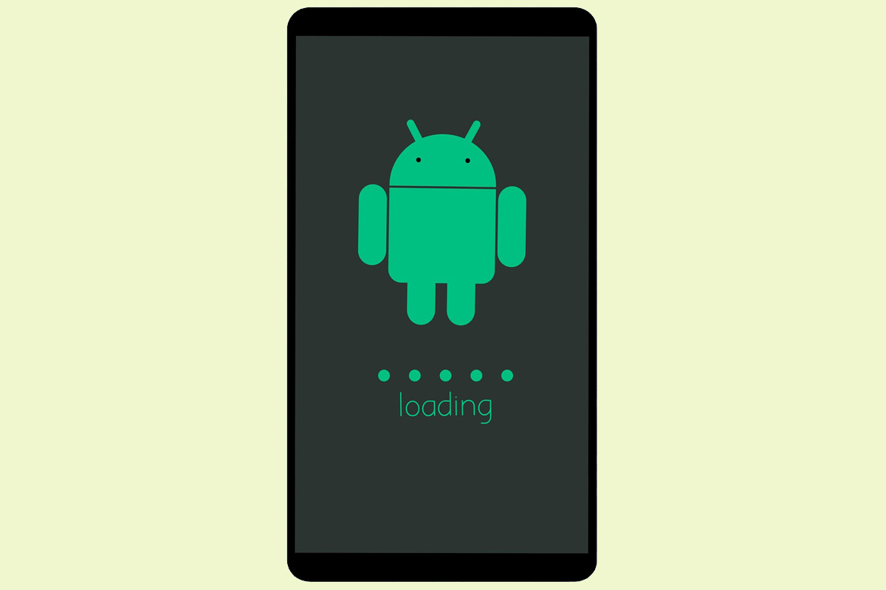
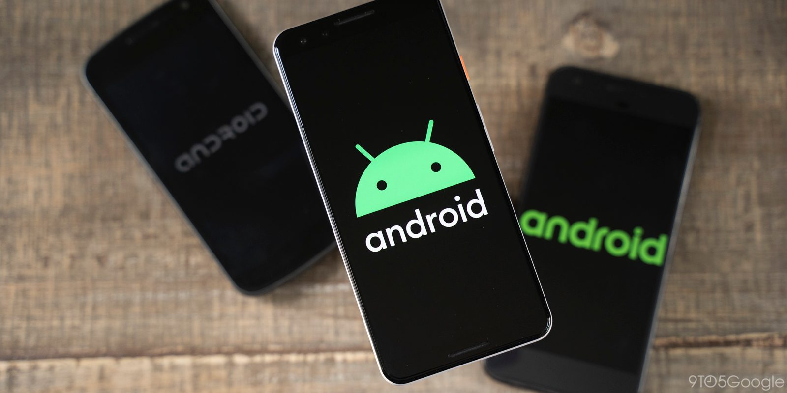
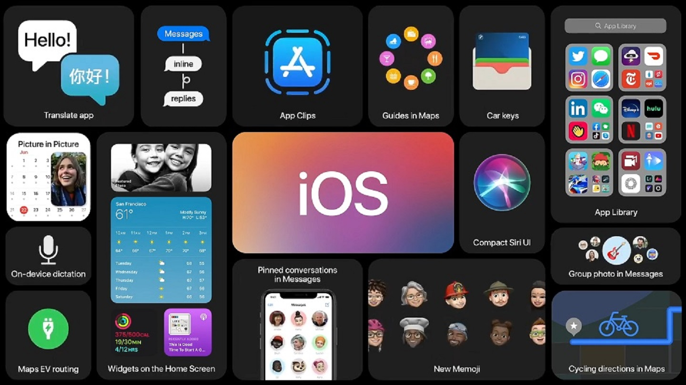
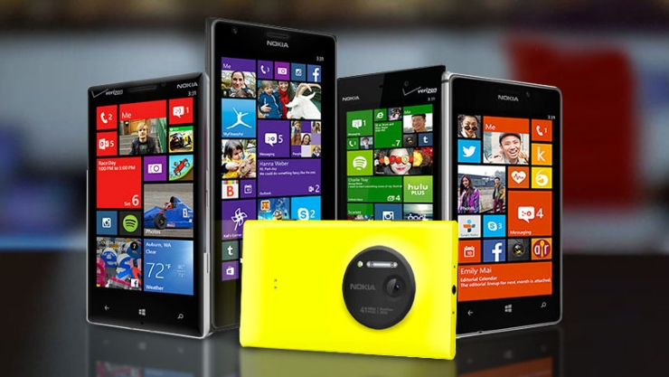

Un sistem de operare (OS) este un software care acționează ca o interfață între utilizatorul final și hardware-ul computerului. Fiecare computer trebuie să aibă cel puțin un sistem de operare pentru a rula alte programe. O aplicație precum Chrome, MS Word, Games etc. are nevoie de un mediu în care va rula și își va îndeplini sarcina.
Sistemul de operare vă ajută să comunicați cu computerul fără să știți cum să vorbiți limba computerului. Nu este posibil ca utilizatorul să foloseasca niciun computer sau dispozitiv mobil fără a avea un sistem de operare.
• Un sistem de operare este un software care acționează ca o interfață între utilizatorul final și hardware-ul computerului.
• Sistemele de operare au fost dezvoltate pentru prima dată la sfârșitul anilor 1950 pentru a gestiona stocarea pe bandă.
• Kernelul este componenta centrală a sistemelor de operare ale unui computer. Singura sarcină efectuată de kernel este de a gestiona comunicarea dintre software și hardware .
• Cele mai populare două kernel-uri sunt Monolithic și MicroKernels.
• Process, Device, File, I / O, Secondary-storage, Memory managment sunt diverse funcții ale unui sistem de operare.
• Batch, Multitasking / Time Sharing, Multiprocessing, Real Time, Distributed, Network, Mobile sunt diferite tipuri de sisteme de operare.
Uneori, ai impresia că am rulat sistemul de operare mobil Google pe dispozitivele noastre Android din totdeauna. Cu toate acestea, a trecut puțin peste un deceniu de când primul telefon oficial Android a ajuns pe rafturile din magazine.
Decizia cheie din istoria Android a fost angajamentul luat de catre Google de a face din Android un sistem de operare open-source. Acest lucru i-a permis să devină extrem de popular în rândul producătorilor de telefoane . Android este o platformă software și un sistem de operare pentru dispozitive și telefoane mobile bazată pe nucleul Linux, dezvoltată inițial de compania Google, iar mai târziu de consorțiul comercial Open Handset Alliance.
Android permite dezvoltatorilor să scrie un cod gestionat în limbajul Java, controlând dispozitivul prin intermediul bibliotecilor Java dezvoltate de Google.Aplicațiile scrise în C și în alte limbaje pot fi compilate în cod mașină ARM și executate, dar acest model de dezvoltare nu este sprijinit oficial de către Google. Lansarea platformei Android la 5 noiembrie 2007 a fost anunțată prin fondarea Open Handset Alliance, un consorțiu de 48 de companii de hardware, software și de telecomunicații, consacrat dezvoltării de standarde deschise pentru dispozitive mobile.
Google a lansat cea mai mare parte a codului Android sub licența Apache, o licență de tip free-software și open source. Google a dezvoltat și alte sisteme de operare bazate pe Android: Wear OS pentru ceasuri inteligente, Android TV pentru SmartTV și Android Auto pentru autoturisme
La doar câțiva ani de la lansarea Android 1.0, smartphone-urile alimentate de noul sistem de operare erau peste tot. La numai 12 ani mai târziu, sărbătorim lansarea Android 11.
Acest sistem de operare a devenit cel mai popular sistem de operare mobil din lume, învingându-și numeroșii concurenți, cum ar fi Symbian, BlackBerry, Palm OS, webOS și Windows Phone.
IOS-ul Apple este singura platformă care rămâne în continuare un competitor serios pentru Android și această situație nu pare să se schimbe în curând.
iOS (anterior iPhone OS) este un sistem de operare mobil creat și dezvoltat de Apple Inc. exclusiv pentru hardware-ul său. Este sistemul de operare care alimentează multe dintre dispozitivele mobile ale companiei, inclusiv iPhone și iPod Touch; de asemenea, a alimentat iPad-ul până la introducerea iPadOS, un derivat al iOS, în 2019. Este al doilea sistem de operare mobil cel mai instalat din lume, după Android.
Este baza pentru alte trei sisteme de operare realizate de Apple: iPadOS, tvOS și watchOS. Este software-ul proprietar, deși unele părți ale acestuia sunt open source sub licența Apple Public Source License și alte licențe.
Asa incepe de fiecare data. E nevoie de un impuls de la spate, de o situatie care iti testeaza limitele, de un moment in care cazi, dar in care stii ca trebuie sa te ridici. Asa s-a intamplat si cu decizia producatorului Huawei de a-si crea propriul sistem de operare. A fost nevoie ca America sa interzica grupurilor mari sa mai faca comert in domeniul telecomunicatiilor cu companiile straine (pentru ca sunt considerate a fi periculoase pentru securitatea nationala), ca Huawei si-a facut imediat planul de actiune.
Lovitura cea mare a venit in momentul in care Google a anuntat suspendarea relatiilor cu producatorul chinez de telefoane mobile, urmand a opri activitatile ce implica transfer de tehnologii open source (adica cele care nu sunt publice) de la Android. Aceasta interdictie nu a afectat pe moment utilizatorii de Huawei, ci masura se va implementa treptat – acestia inca vor putea accesa Google Play Store pentru actualizarea aplicatiilor sau pentru descarcarea altora. Insa, in aceasta situatie, nu se vor mai primi actualizari ale sistemului de operare si nici patch-uri pentru securitate. Pana cand va mai fi acest lucru posibil? Data este inca incerta.
Ce este sigur e ca Huawei si-a dezvoltat propriul sistem de operare, denumit Harmony OS (sau Hongmeng in chineza), pe care l-a prezentat deja anul trecut, in luna august. Ulterior, a fost inregistrat in cel putin 9 tari si in cadrul UE. Acesta urmeaza sa se regaseasca atat pe telefoanele mobile, cat si pe alte dispozitive si gadget-uri, cum ar fi boxele inteligente sau chiar si in masina (compania se concentreaza din ce in ce mai mult si investeste in ceea ce numim Internet of Things).
Acest sistem de operare va fi lansat ca o platforma open-source la nivel mondial, tocmai pentru a incuraja descarcarea in randul a cat mai multor persoane. Primul dispozitiv care are integrat acest sistem de operare este Honor TV (acum este disponibil si pe Huawei TV). Daca te intrebi cand vei putea sa iti cumperi un telefon Huawei cu Harmony OS, afla ca trebuie sa mai astepti ceva (dar nu chiar atat de mult) – in China pot fi achizitionate deja produse cu acest sistem de operare, insa in Europa si in alte tari vor fi puse la vanzare mai tarziu, in acest an. Asa cum afirma si CEO-ul companiei, sistemul de operare poate fi aplicat imediat pe dispozitivele mobile, insa in acest moment prioritatea este sa se pastreze versiunea Android. Abia in momentul in care acest lucru nu va mai fi posibil, se va face trecerea la un nou sistem de operare.
Compania lucreaza de zor si la noua gama de telefoane mobile – Huawei P40 si Huawei Mate 40, dispozitive ce ar trebui sa vina cu noul Harmony OS integrat. Pana atunci, insa, vedem exact care vor fi miscarile celorlalti competitori. Cu noul sistem de operare, cu siguranta va fi “armonie” in tehnologie.
BlackBerry OS este un sistem propriu de operare mobil dezvoltat de BlackBerry Limited pentru linia BlackBerry de dispozitive mobile smartphone. Sistemul de operare oferă multitasking și acceptă dispozitive de intrare specializate care au fost adoptate de BlackBerry pentru utilizarea în dispozitivele sale portabile, în special trackwheel, trackball și, cel mai recent, trackpad-ul și touchscreen-ul.
S-au creat pana in anul 2012, 6 versiuni ultima fiind 7.1. In anul 2016 comapania canadiana Blackberry a anuntat că va renunţa la propriul sistem de operare BlackBerry 10 şi se va concentra pe Android.
John Chen, directorul executiv al companiei, a sugerat în trecut că va fi forţat să facă această mişcare, în cazul în care BlackBerry nu reuşeşte să readucă pe profit divizia hardware. La acel moment viata sistemului de operare mobil Blackberry OS a luat sfarsit. Iar compania s-a concentrat pe sistemul de operare lider de piaţă şi a încercat să dezvolte „cel mai sigur smatphone Android pentru segmentul enterprise”.
Windows Phone este un sistem de operare pentru dispozitive mobile dezvoltat de Microsoft și este succesorul platformei Windows Mobile. Au fost dezvoltate pana in anul 2015 , 4 versiuni ale acestui sistem de operare dintre care ultimul aparut a fost Windows 10.
O reinventare completă a bătrânului Windows Mobile, sistemul de operare Windows Phone a fost destul de bine pus la punct de Microsoft. A rulat pe o varietate foarte mare de gadgeturi, de la un număr important de producători și nu părea că va dispărea vreodată. Anduranța sa a fost dată și de terminalele de top lansate de Microsoft sub brandul Lumia. Din păcate, nu a avut parte de suportul dezvoltatorilor pe termen lung, iar lipsa unor aplicații importante a făcut cea mai mare parte a utilizatorilor de smartphone să rămână la iOS sau Android.
Din pacate in anul 2017 Microsoft a anunțat oficial că încetează suportul mainstream pentru respectiva platformă. Iar din acel moment nu au mai fost create telefoane cu sistemul de operare Windows Phone. De asemenea, creatorul Windows Phone a refuzat sa cumpere Android.
